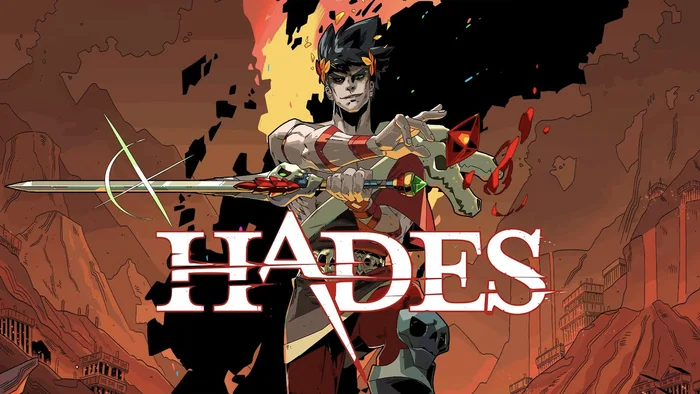
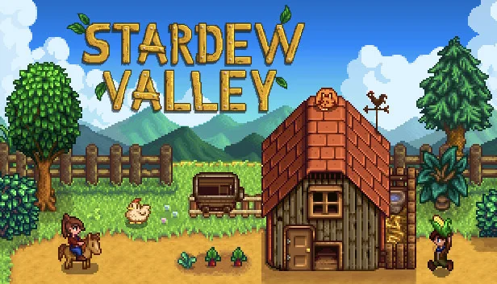
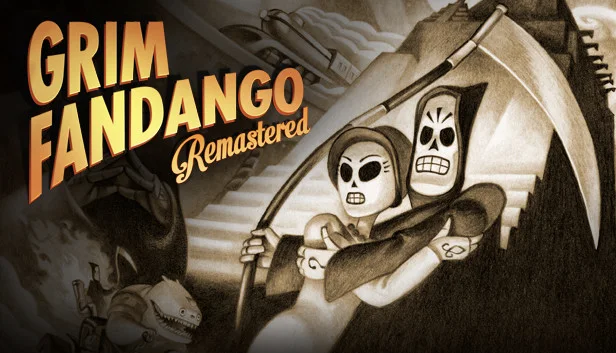
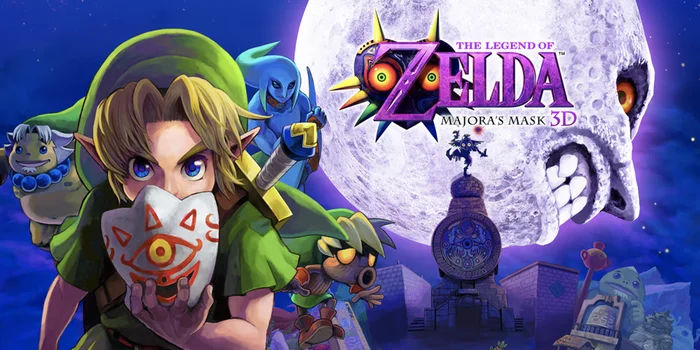
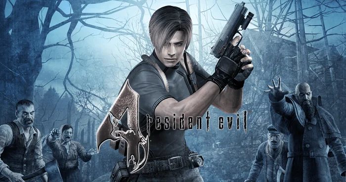
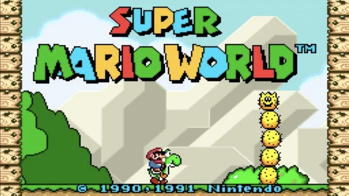
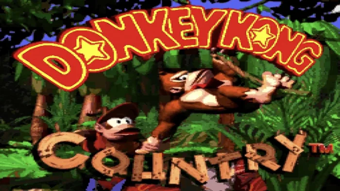

About me
I'm an interdisciplinary designer who loves designing new products and thoughtful experiences.
I'm currently responsible for improving the player experience in Angry Birds Friends, leading the UX and research aspects of the project.
Working with mobile games particularly broadened my understanding of design patterns and behavioral design.
Before joining Rovio, I worked for 2,5 years at Wildlife Studios, a Brazilian mobile games company. I had the chance to work in three new games and be part of the live operations of Tennis Clash. I also have experience working with fintech: During my time working at Nubank, a disruptive fintech in Brazil, I was a Senior Product Designer responsible for leading the activation experience for customers with low or no credit scores in the Credit Card business unit. I also worked at PagSeguro, one of the biggest fintechs in Brazil, being the UX responsible for improving the experience of their Point of Sale machines.
Before all that, I learned everything I know about UX Research by planning and applying more than 200 sessions of usability tests at Saiba+, for clients such as Facebook, Itaú, Santander, Moderna, and Claro.
I'm deeply interested in storytelling and game design, which made me attend Game Jams since 2011, designing all sorts of games from tabletop to mobile, and volunteer as a juror for IndieCade since 2016, playing lots of indie games and analyzing their viability for the festival.
I usually spend my free time playing games, reading books, watching movies, and sometimes taking pictures.
Even more about me






